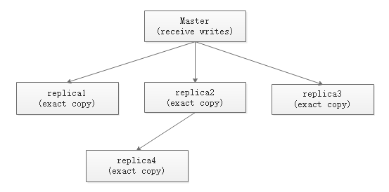
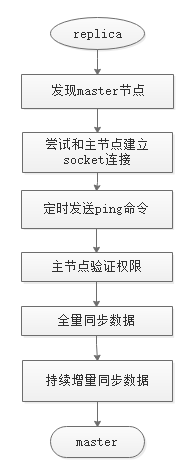
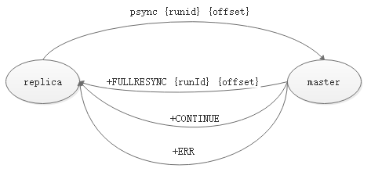

主从复制模型

上图为redis主从复制的基本模型，可以看出此模型由两个基本组成部分：Master以及Replica，一个Master可以有多个Replica，一个Replica只有一个Master。另外，一个Replica也可以作为一个Master。
复制过程

- 配置并启动从节点后，从节点保存主节点信息；
- 从节点发现主节点并尝试和主节点建立socket连接;
- 连接成功之后，从节点定时发送ping命令，并希望接收到pong，如果没有则尝试重新建立连接；
- 如果主节点设置了权限，那么就需要进行权限验证；
- 权限认证通过之后，从节点会向主节点发送同步请求；
- 主节点运行bgsave将数据库中的数据备份到.rdb文件，并将.rdb文件发送给从节点，这一步是全量更新，是最耗时的一步操作。之后主节点会陆续将写操作发送给从节点，来保持主从一致；
- 从节点获取到.rdb文件之后将数据导入数据库，并从socket获取到陆续到来的写操作，来保持主从一致。
数据同步
从上述的复制过程可以看出，数据同步有两种方式，一种是 全量复制 ，一种是 增量复制 。
redis有两个同步命令：sync和psync。sync是redis2.8版本之前的同步命令，在redis2.8版本之前，从节点如果失去了主节点的连接，将进行全量复制，psync就是redis为了优化这一现象而创建的一个新的命令。
sync命令就不介绍，这里重点说明psync命令。psync命令依赖三个重要的概念：
- 节点runid；
- 节点backlog缓冲区；
- 节点offset偏移量；
runid
- 每个redis实例在启动时，会在内存中生成一个类似（ed61b4833a620b2ebbfacc675b7bfd2d0b7adc9c）这样的40位runid，此runid并不是pid；
- 在redis实例重启之后，之前的runid将会丢失，redis将重新生成一个新的runid；
backlog缓冲区
- backlog缓冲区是一个保存在内存中的固定长度的单向队列，用来记录所有成功执行的写操作，默认大小为1M，可以使用 info replication （repl_backlog）指令查看；
- 参与主从复制的所有节点都会维护自己的一个backlog缓冲区；
- 重启之后，backlog缓冲区的数据将会丢失；
offset偏移量
- 参与主从复制的所有节点都会维护自身的一个offset偏移量；
- 每当节点（主、从）处理完写操作之后，会统计命令的字节长度并累加到offset偏移量上。
- 重启之后，offset偏移量的数据将会丢失。
psync指令
redis2.8版本以后，使用指令psync指令进行同步，其格式为 psync {runid} {offset}，其中runid是主节点runid，如果没有默认为-1，offset是从节点的偏移量，没有默认为-1。从节点会使用psync指令进行数据同步：从节点将自己缓存到的主节点runid以及自己的offset偏移量发送至主节点，主节点判断runid是否一致并且offset标识的数据是否依然在缓冲区：

- 如果runid不一致或者offset偏移量已失效，则主节点将返回 +FULLRESYNC {runId} {offset}，并将.rdb文件发送至从节点，从节点保存主节点runid和offset，并导入.rdb文件数据；
- 如果runid一致并且offset依然有效，则主节点将返回 +CONTINUE， 并将backlog缓冲区的数据发送至从节点，从节点以此进行增量同步数据；
- 如果主节点不支持psync指令，将返回+ERR，并使用sync来进行全量同步。
全量复制
在redis2.8版本之前，redis使用sync指令进行同步，此时为全量复制，redis2.8版本之后添加了指令psync同时支持全量复制和增量复制。
- 从节点发送命令 psync ? -1；
- 主节点根据命令返回 +FULLRESYNC {runId} {offset}，并运行bgsave指令，生成.rdb文件发送给从节点，并开始维护backlog，记录从现在开始执行成功的写指令；
- 从节点保存主节点runid和offset，清空数据，接收主节点.rdb文件并导入数据；
- 从节点成功加载完 RBD 后，如果开启了 AOF，会立刻做 bgrewriteaof。
notice:
- 在主节点执行bgsave保存当前数据到.rdb文件时，如果消耗了大量的时间，从节点迟迟得不到回应，可能会触发超时。
- 如果整个全量复制过程耗费了大量时间，而在这期间，主服务器进行了大量的写操作，导致backlog无法保存所有的写指令，这时就会发生缓冲区溢出，复制失败。
增量复制
在从节点复制主节点的过程中，如果出现网络问题或者其他异常，可能会导致从节点失去和主节点的连接，从节点会在重新连接后发出增量复制请求，主节点只需将保存在backlog中的数据发送给从节点即可保证数据一致性：
- 从节点重新建立连接后，发送psync {runid} {offset}；
- 主节点验证runid以及offset，如果满足增量复制的条件，则返回 +CONTINUE 响应。
- 主节点将缓冲区的数据发送到从节点，保证主从复制进行正常状态。
心跳检测
redis主从连接依赖心跳机制来维持。默认从节点每10秒向主节点发送一次ping命令，可以通过修改repl-ping-replica-period参数的值来修改心跳发送间隔。从节点发送ping命令之后，会等待主节点回复pong，默认超时时间为60s，如果60秒之内没有返回，则判定为超时，此时从节点会尝试重新建立连接。
从节点也会通过心跳机制来想主节点上报自己的offset偏移量（replconf ack{offset}），来进行增量复制保持主从一致，主节点收到 replconf 信息后，判断从节点超时时间，如果超过 repl-timeout 值，则判断从节点下线。
总结
本文比较简单的记录了我学习redis主从复制的原理的过程，包括主从复制模型、数据同步、psync指令、全量复制、增量复制、心跳检测。在redis2.8之后引入的psync指令极大的改善了redis主从复制的性能，但是redis的数据同步依然是一个复杂、耗时的过程，也可以体会到redis在处理大量数据上的瓶颈。